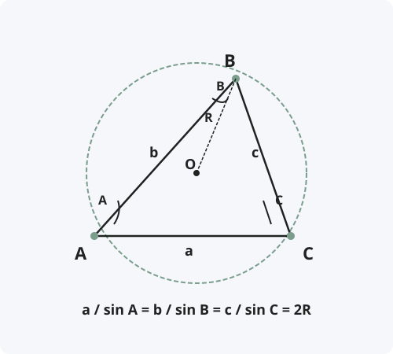

Теорема синусов
Формулировка
Стороны треугольника пропорциональны синусам противолежащих углов. Отношение стороны к синусу противолежащего угла равно диаметру описанной окружности.
Обозначения
Пусть дан треугольник ABC со сторонами:
a = BC — сторона, противолежащая углу A
b = AC — сторона, противолежащая углу B
c = AB — сторона, противолежащая углу C
R — радиус описанной окружности
Тогда: a / sin A = b / sin B = c / sin C = 2R

Доказательство
Теорема доказана.
Следствия из теоремы
- В треугольнике против большей стороны лежит больший угол, и наоборот.
- Если известны два угла и сторона, можно найти остальные стороны.
- Если известны две стороны и угол напротив одной из них, можно найти остальные элементы (решение треугольника).
- Площадь треугольника можно выразить через синус: S = ½·ab·sin C = ½·bc·sin A = ½·ac·sin B.
- Радиус описанной окружности: R = a / (2 sin A) = b / (2 sin B) = c / (2 sin C) = abc / (4S).
Примеры применения
Пример 1. В треугольнике ABC угол A = 30°, угол B = 45°, сторона a = 10 см. Найдите сторону b.
Решение: a / sin A = b / sin B ⇒ 10 / sin 30° = b / sin 45° ⇒ 10 / 0,5 = b / (√2/2) ⇒ 20 = b / (√2/2) ⇒ b = 10√2 ≈ 14,1 см.
Пример 2. В треугольнике сторона a = 8, угол A = 60°, угол C = 75°. Найдите радиус описанной окружности.
Решение: 2R = a / sin A = 8 / sin 60° = 8 / (√3/2) = 16/√3 ⇒ R = 8/√3 ≈ 4,62.
Пример 3. В треугольнике даны стороны a = 7, b = 9 и угол A = 40°. Найдите угол B.
Решение: a / sin A = b / sin B ⇒ 7 / sin 40° = 9 / sin B ⇒ sin B = 9·sin 40° / 7 ≈ 9·0,6428 / 7 ≈ 0,826 ⇒ B ≈ 55,7° или B ≈ 124,3° (два возможных решения).
Историческая справка
Теорема синусов была известна ещё в Древней Индии. Индийский математик и астроном Ариабхата (V век) использовал её в своих астрономических расчётах.
В исламском мире теорему синусов развивал Ал-Баттани (IX-X века). В Европе теорема появилась в трудах Региомонтана (XV век) и стала широко применяться в тригонометрии и навигации.
Название «синус» происходит от латинского sinus («изгиб», «пазуха»), что является ошибочным переводом арабского «джайб» («карман»), которое в свою очередь произошло от санскритского «джива» («тетива лука»).
Интересные факты
- Теорема синусов работает для любого треугольника, включая тупоугольные и прямоугольные.
- В прямоугольном треугольнике теорема синусов превращается в определение синуса: sin A = a / c.
- Теорема синусов используется в геодезии для определения расстояний до недоступных объектов (метод триангуляции).
- В навигации с помощью теоремы синусов рассчитывают курс корабля по известным координатам и углам.
- В сферической геометрии существует своя версия теоремы синусов для треугольников на поверхности сферы.